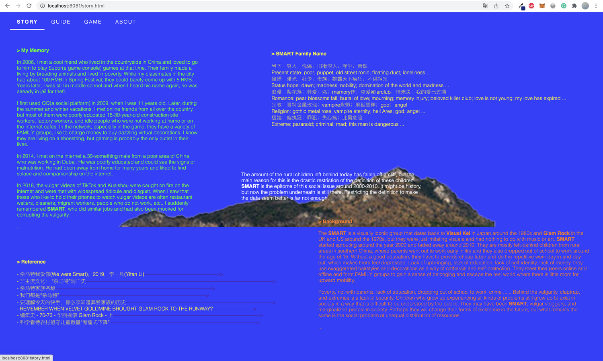
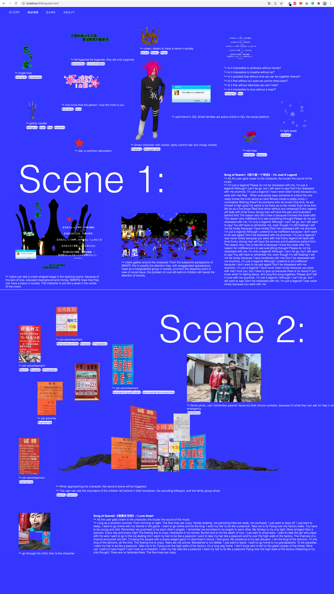
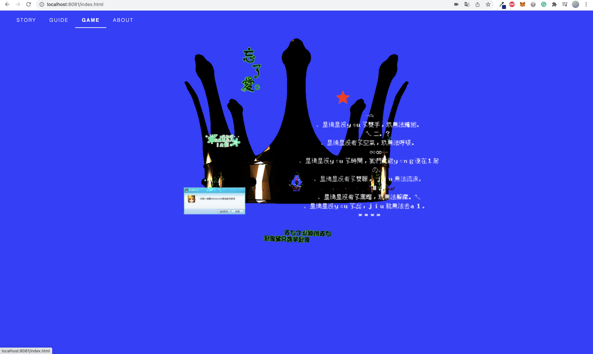
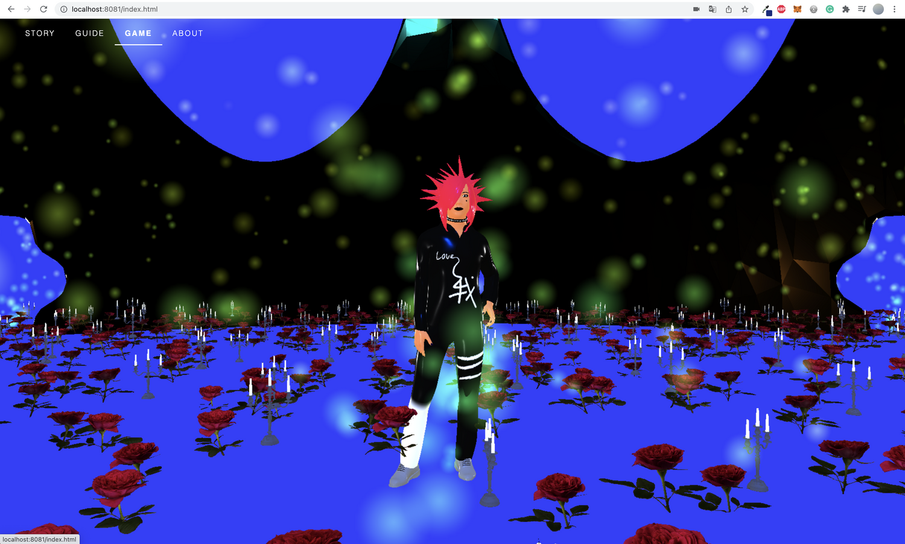
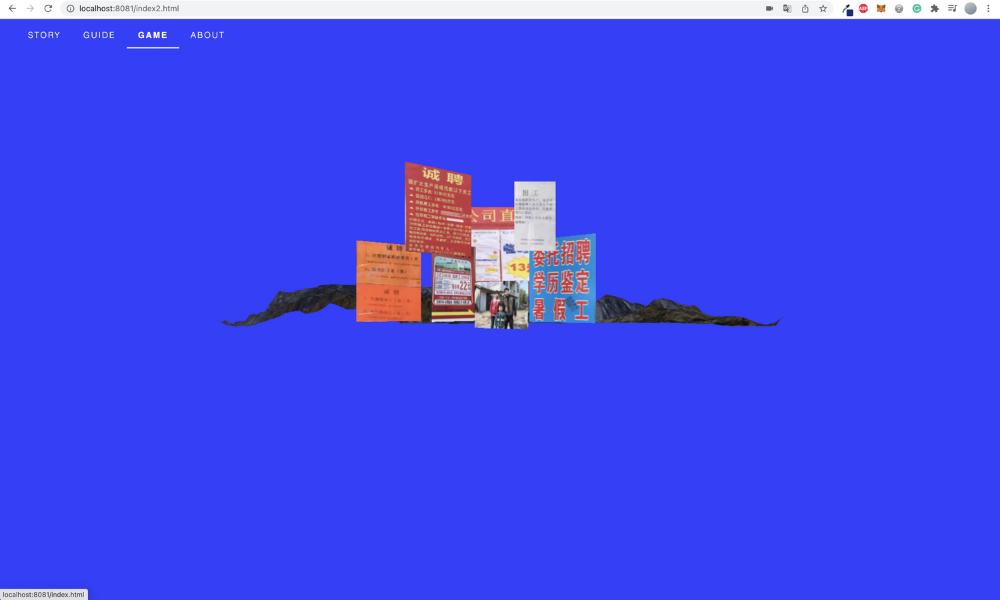
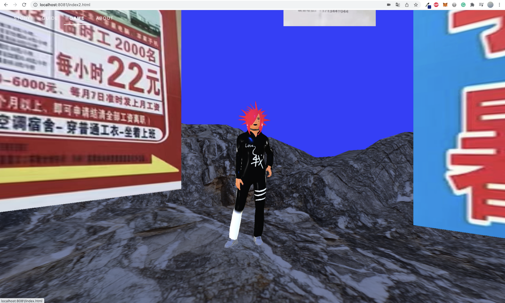
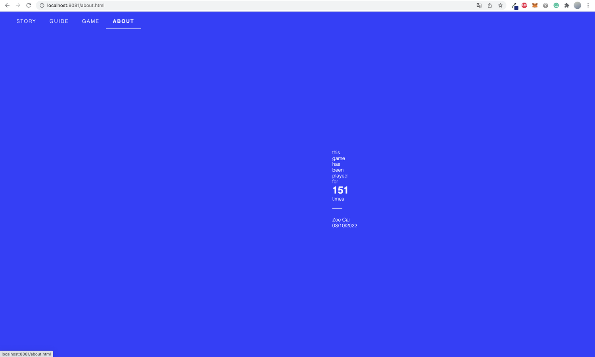

| Category | Duration | Tool |
|---|---|---|
| 3D; Real-Time Communications; Design; Development | Feburary 2022 - March 2022 @ New York University | JavaScript |
Blue is the sadness that life brings, blue is the bruises left by bullying ...
According to a relevant report in China around 2018, the amount of rural children left behind today has fallen off
a cliff. But the main reason for this is the drastic restriction of the definition of these children.
SMARTs are people who love making exaggerated spiky and colorful hair to make them feel secure. They are from
low-income families in rural regions and don’t have received well education. Many of the SMARTs are exactly
composed of those left-behind children. In other words, SMART is the epitome of this social issue around
2000-2010. But now, the problem underneath is still there. Restricting the definition to make the data seem better
is far not enough.
So I create this online virtual space to gather people from around the globe and show this problem.
> operation
>> W, A, S, D / ⬆️, ⬇️, ⬅️, ➡️ - control walking
>> mouse press & drag - control camera's view angle
>> be on the same position as the character - shift scene to his / her world of sadness
> sound
>> the closer to the character, the louder the music is
>> scene1 music - 哥只是个传说 I'm Just A Legend, 陈旭 Xu Chen
>> scene2 music - 我爱杀马特 I Love Smart, 文米米 Mimi Wen
> other
>> every element or interaction in game has its own reason, and I create a guide page to explain
>> I calculate how many times this game has been played and display the number on the last page, because it shows
how many times this social issue has been presented through the game
Recording
Process
      